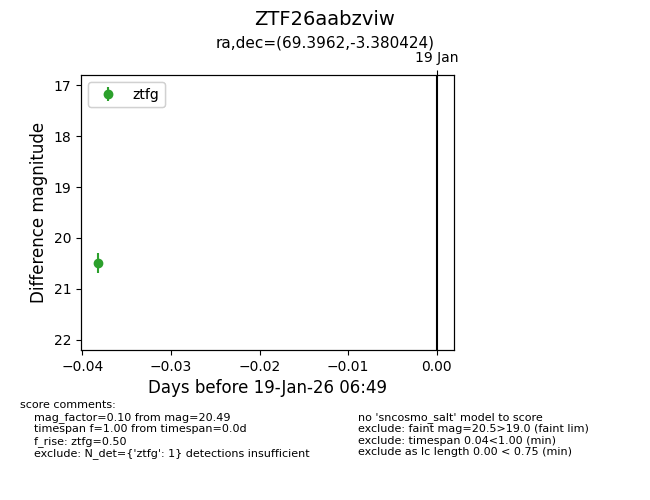
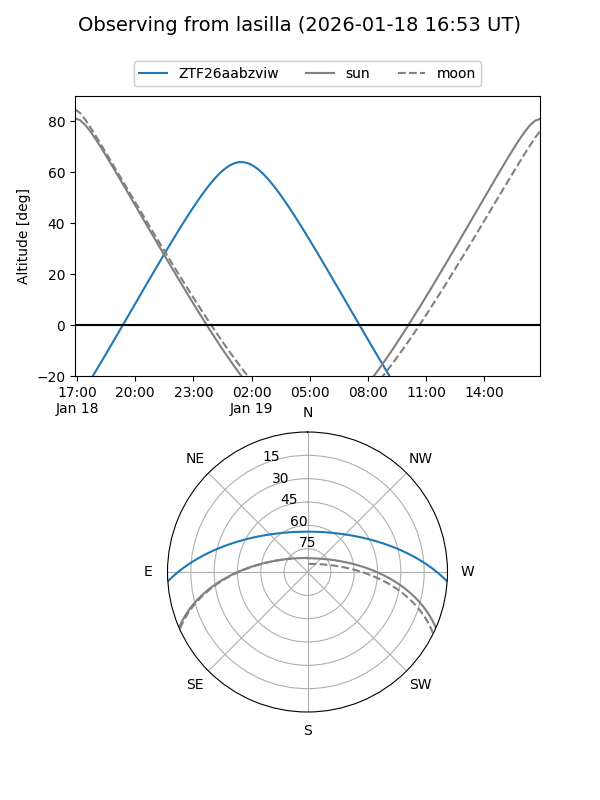
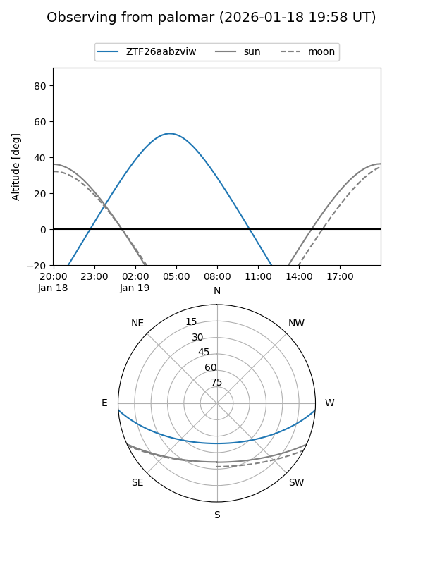

ZTF26aabzviw
Target ZTF26aabzviw at 2026-01-19 06:50
Aliases and brokers:
FINK: link
Lasair: link
ALeRCE: link
alt names
ZTF26aabzviw (ztf,fink_ztf)
Coordinates:
equatorial (ra, dec) = 69.3962,-3.38042
equatorial (HMS+DMS) = 04:37:35.10,-03:22:49.52
galactic (l, b) = (199.5244,-31.11613)
Flags:
Photometry:
last ztfg=20.49
1 ztfg detections
Lightcurve

Visibility


Additional plots